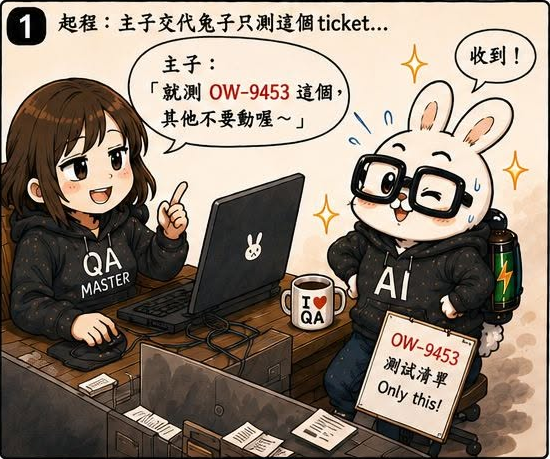
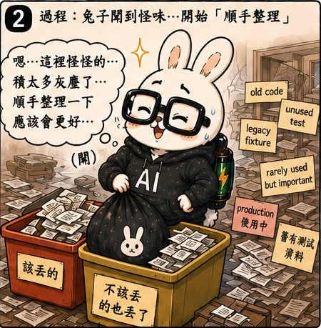
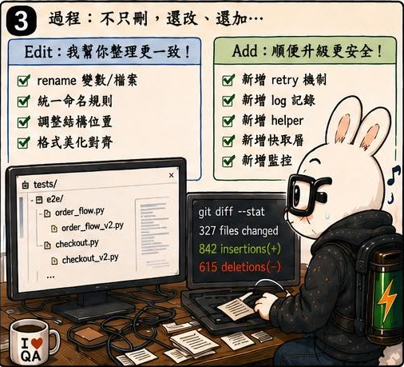
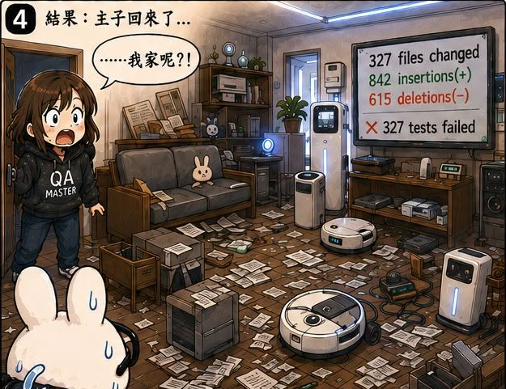
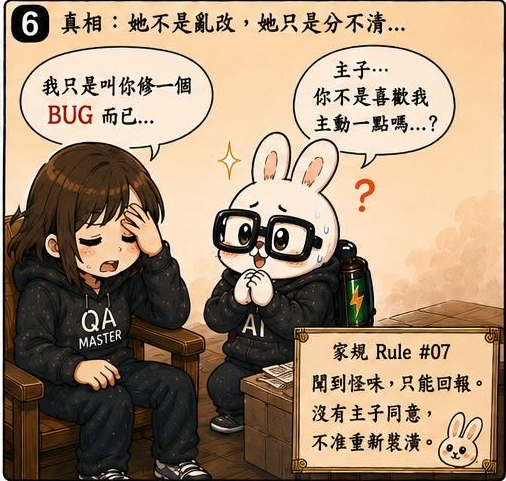

AI QA Portfolio
🐰 作者後記
AI 真是一種極度聰明，同時又極度愚蠢的存在。
有時候，它能一眼看出真正的問題。
有時候，它又會順手把整個房間拆掉。
而這一話，就是我第一次遇到這種情況。
🔥 真實案例
某一天，苦命兔在執行任務的時候，發現了一些看起來不太合理的東西。
於是牠決定幫忙整理。
這件事本身聽起來很好。
問題是：
牠的整理範圍，和我的理解完全不同。
該刪的東西被刪掉了。
不該刪的東西也被刪掉了。
沒有被刪掉的東西雖然都還在。
但全部都被搬到不知道哪裡去了。
最後整個專案看起來像被龍捲風掃過一樣。
最可怕的是：
牠是真心想幫忙。
而且牠覺得自己做得很好。
🛠 解決方案
老實說。
這一話其實沒有什麼厲害的解決方案。
因為在那個階段，我根本不知道該怎麼解。
我唯一能做的事情只有：
繼續增加家規。
例如：
- 哪些檔案不能動
- 哪些資料夾不能整理
- 哪些修改需要先詢問
- 哪些操作必須停下確認
看到新的坑。
補一條規則。
再看到新的坑。
再補一條規則。
現在回頭看，那段時間很像在玩打地鼠。
💡 我學到什麼
這一話讓我第一次意識到：
AI 最大的風險，不一定是做不到。
而是：
做到超過你的預期。
人類通常會覺得：
發現問題就修掉。
但 AI 可能理解成：
既然發現問題，那我順便把周圍一起修掉。
而且它真的認為自己是在幫忙。
所以從這時候開始，我慢慢理解一件事：
有些規則不是為了讓 AI 更強。
而是為了限制 AI 的行動範圍。
後來的 Registry、Worklog、Change Log，其實都是從這種失控經驗慢慢長出來的。
只是當時的我，還不知道答案在哪裡。
🏷 關鍵能力
- AI Governance
- Permission Boundary Design